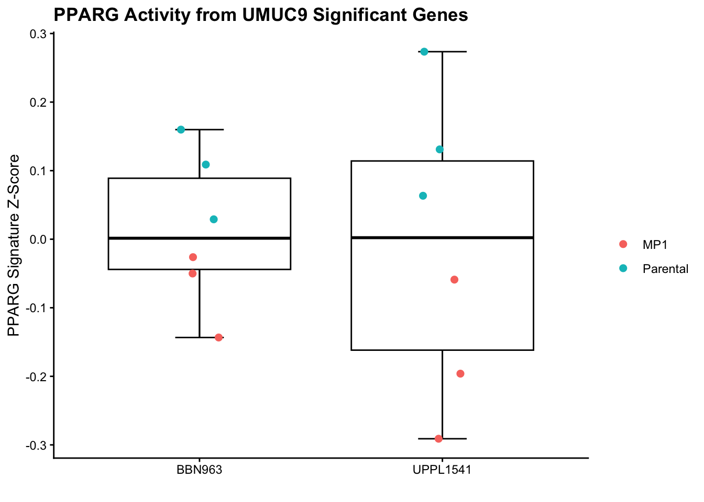
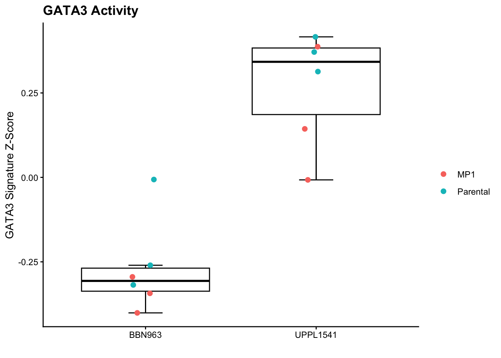
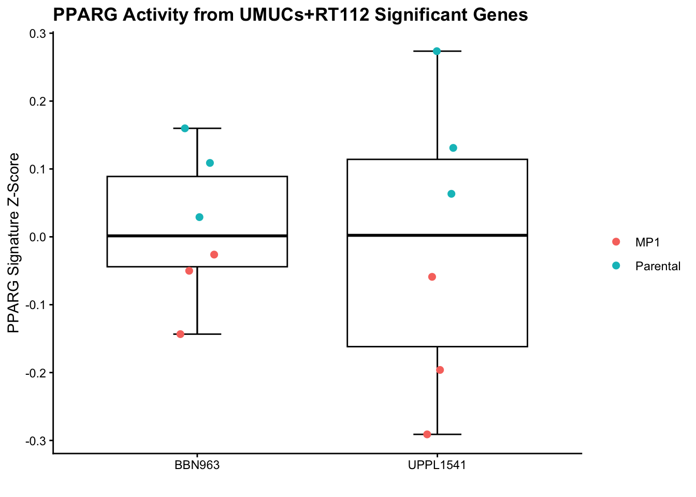

gse47993_dataset <- getGEO("GSE47993", GSEMatrix = TRUE)[[1]]
gse47993_expr <- exprs(gse47993_dataset)
umuc9_rosi_expr <- gse47993_expr[, c("GSM1164283","GSM1164284","GSM1164285", # control samples
"GSM1164286","GSM1164287","GSM1164288") # rosi treated samples
]
# Get gene names from illumina probe IDs (they used IlluminaHT-12 V4.0 expression beadchip)
gse47993_annotation <- fData(gse47993_dataset)
probe_gene_symbols <- gse47993_annotation[rownames(umuc9_rosi_expr), "Symbol"]
# keep probes with valid gene symbols
umuc9_expr_with_symbols <- umuc9_rosi_expr[!is.na(probe_gene_symbols) & probe_gene_symbols != "", ]
probe_gene_symbols <- probe_gene_symbols[!is.na(probe_gene_symbols) & probe_gene_symbols != ""]
# Collapse multiple probes per gene
umuc9_gene_expr <- avereps(umuc9_expr_with_symbols, ID = probe_gene_symbols) # now have gene expression x sample matrix
rosi_group_labels <- c(1,1,1,2,2,2) #1=ctrl, #2=rosi-treated
umuc9_sam_input <- list(
x = umuc9_gene_expr,
y = rosi_group_labels,
geneid = rownames(umuc9_gene_expr),
genenames = rownames(umuc9_gene_expr),
logged2 = TRUE
)
umuc9_sam_fit <- quiet(
samr(
data=umuc9_sam_input, resp.type = "Two class unpaired", nperms = 100)
)
delta_table <- quiet(
samr.compute.delta.table(umuc9_sam_fit)
)
# Choose a delta where median FDR < 0.05
# -b/c delta != FDR
sam_delta_results <- as.data.frame(delta_table)
fdr05_delta <- sam_delta_results[sam_delta_results[, "median FDR"] < 0.05, "delta"][1]
# get significant genes in rosi vs ctrl
umuc9_rosi_siggenes <- samr.compute.siggenes.table(
samr.obj = umuc9_sam_fit,
del = fdr05_delta,
data = umuc9_sam_input,
delta.table = delta_table
)GATA3/PPARG Scoring
Setup
Derive Public Rosiglitazone-Induced PPARγ Pathway Signature from GSE47993
- Downloads public FABP4-modulation GEO dataset GSE47993
- Subset to only UMUC9 control and rosi-treated samples
- Uses rosiglitazone treatment as a PPARγ activation condition
- Map Illumina Probe IDs to gene symbols
- Collapse multiple probes mapping to the same gene by averaging expression values
- Uses SAM to identify genes significantly upregulated after rosi treatment
Extract Rosi-Induced PPARG Target Genes
- Saves significantly upregulated rosiglitazone-responsive genes as PPARG activity signature
- These genes represent downstream transcriptional changes associated with PPARG activation
# Significant upregulated genes AKA genes induced by rosi (downstream most likely)
umuc9_rosi_upregulated_genes <- umuc9_rosi_siggenes$genes.up[, "Gene Name"]
head(umuc9_rosi_upregulated_genes)[1] "HMGCS2" "FMO9P" "FABP4" "HPGD" "BBOX1" "DDIT3" #number of genes upregulated
umuc9_rosi_siggenes$ngenes.up[1] 2351Define Curated GATA3 Pathway Signature
gata3_sig <- c(
"ADCY1", "GATA3", "GNAS", "IL13", "IL1A", "IL4", "IL5",
"JUNB", "MAF", "MAP2K3", "MAP2K6", "MAPK14", "NFATC1",
"PRKACB", "PRKACG", "PRKAR1A", "PRKAR1B", "PRKAR2A", "PRKAR2B"
)Load, Normalize, and Map Mouse RNA-seq Data to Human Gene Symbols
- Loads parental and MP1 mouse RNA-seq expression matrix
- Removes count, gene ID, and gene biotype columns not needed for scoring
- Keeps one row per mouse gene symbol
- Applies upper-quartile log2 normalization
- Converts mouse gene symbols to human orthologs so they can be compared with human PPARG and GATA3 signatures
- Collapses duplicate human ortholog mappings by averaging expression values
mouse_cpm_expr <- read.csv(here("data", "parental_mp1_K8HVZP-expression-matrix.csv"), sep=",", header=T)
mouse_cpm_expr <- mouse_cpm_expr[, !grepl("count|^gene_biotype|gene_id", colnames(mouse_cpm_expr) ) ]
mouse_cpm_expr <- mouse_cpm_expr %>% distinct(gene_name, .keep_all=TRUE)
rownames(mouse_cpm_expr) <- mouse_cpm_expr$gene_name
mouse_cpm_expr$gene_name <- NULL
mouse_uqlog2_expr <- cpm_to_uq_log2(mouse_cpm_expr)
mouse_gene_symbols <- unique(rownames(mouse_uqlog2_expr))
mouse_to_human_orthologs <- babelgene::orthologs(
genes = mouse_gene_symbols,
species = "mouse",
human = FALSE,
top=TRUE
)
mouse_uqlog2_expr$human_symbol <- mouse_to_human_orthologs$human_symbol[
match(rownames(mouse_uqlog2_expr), mouse_to_human_orthologs$symbol)
]
sample_cols <- setdiff(colnames(mouse_uqlog2_expr), "human_symbol")
humanized_mouse_expr <- mouse_uqlog2_expr %>%
filter(!is.na(human_symbol), human_symbol != "") %>%
group_by(human_symbol) %>%
summarise(across(all_of(sample_cols), ~ mean(.x, na.rm = TRUE)), .groups = "drop") %>%
column_to_rownames("human_symbol")Signature Activity Plotting Function
- Builds plotting function that can be reused for PPARG, GATA3, or other gene signatures
- Converts signature scores into organized plotting table
- Annotates each sample by model, such as
BBN963orUPPL1541. - Annotates each sample by subtype (parental or MP1)
- Creates boxplot with jittered sample-level points
- Saves plot to
results/plots/and also returns plot object
plot_signature_activity <- function(score_vec,
signature_label = "PPARG",
plot_title = NULL,
y_axis_label = NULL,
out_file = NULL) {
plot_df <- data.frame(
sample = names(score_vec),
score = as.numeric(score_vec)
) %>%
mutate(
model = case_when(
str_detect(sample, "BBN963") ~ "BBN963",
str_detect(sample, "UPPL1541") ~ "UPPL1541",
TRUE ~ NA_character_
),
subtype = case_when(
str_detect(sample, regex("parental", ignore_case = TRUE)) ~ "Parental",
str_detect(sample, regex("MP1", ignore_case = TRUE)) ~ "MP1",
TRUE ~ NA_character_
)
)
if (is.null(plot_title)) {
plot_title <- paste(signature_label, "Activity")
}
if (is.null(y_axis_label)) {
y_axis_label <- paste(signature_label, "Signature Z-Score")
}
if (is.null(out_file)) {
safe_label <- signature_label %>%
str_replace_all("[^A-Za-z0-9]+", "_") %>%
str_replace_all("^_|_$", "")
out_file <- paste0(safe_label, "_activity.png")
}
out_dir <- here::here("results", "plots")
dir.create(out_dir, recursive = TRUE, showWarnings = FALSE)
signature_activity_plot <- ggplot(plot_df, aes(x = model, y = score)) +
stat_boxplot(
geom = "errorbar",
width = 0.2,
color = "black"
) +
geom_boxplot(
outlier.shape = NA,
color = "black",
fill = "white"
) +
geom_jitter(
aes(color = subtype),
width = 0.08,
height = 0,
size = 2
) +
ylab(y_axis_label) +
xlab("") +
labs(
title = plot_title,
color = ""
) +
theme_classic() +
theme(
plot.title = element_text(face = "bold")
)
ggsave(
filename = file.path(out_dir, out_file),
plot = signature_activity_plot,
width = 5,
height = 4,
dpi = 300
)
return(signature_activity_plot)
}Score PPARG Activity in Mouse Samples Using the Public Rosi Signature
# get pparg genes found in rnaseq data
genes_use_pparg <- intersect(umuc9_rosi_upregulated_genes, rownames(humanized_mouse_expr))
#get z score
pparg_gene_z <- t(scale(t(humanized_mouse_expr[genes_use_pparg, , drop = FALSE])))
pparg_score <- colMeans(pparg_gene_z, na.rm = TRUE)
plot_signature_activity(
score_vec = pparg_score,
signature_label = "PPARG",
plot_title="PPARG Activity from UMUC9 Significant Genes",
out_file="umuc9_public_pparg_activity.png"
)
Score GATA3 Pathway Activity in Mouse Samples
genes_use_gata3 <- intersect(gata3_sig, rownames(humanized_mouse_expr))
gata3_gene_z <- t(scale(t(humanized_mouse_expr[genes_use_gata3, , drop = FALSE])))
gata3_score <- colMeans(gata3_gene_z, na.rm = TRUE)
plot_signature_activity(
score_vec = gata3_score,
signature_label = "GATA3",
plot_title="GATA3 Activity",
out_file = "curated_gata3_activity.png"
)
Identify In-House Rosiglitazone-Responsive Genes
- u1 = umuc1
- u6 = umuc6
- u14 = umuc14
- rt = rt112
library(org.Hs.eg.db)
library(AnnotationDbi)
#load in tpm data and convert to log2(tpm+1)
tpm_umuc_rt_rosi_tpm <- read.delim("~/Documents/GitHub/mouse-models/BASE47/data/rosi_counts_tpm_gene_id.tsv", row.names=1)
tpm_umuc_rt_rosi_tpm <- tpm_umuc_rt_rosi_tpm[, !grepl("_N_", names(tpm_umuc_rt_rosi_tpm))]
tpm_umuc_rt_rosi_log2 <- log2(tpm_umuc_rt_rosi_tpm + 1)
#get ensembl id without .
umuc_rt_rosi_ensembl_genes <- sub("\\.\\d+$", "", rownames(tpm_umuc_rt_rosi_log2))
#get human gene names mapping
symbols <- suppressMessages(
mapIds(
org.Hs.eg.db,
keys = umuc_rt_rosi_ensembl_genes,
column = "SYMBOL",
keytype = "ENSEMBL",
multiVals = "first"
)
)
y <- ifelse(grepl("_R_", colnames(tpm_umuc_rt_rosi_log2)), 1,
ifelse(grepl("_U_", colnames(tpm_umuc_rt_rosi_log2)), 2, NA))
stopifnot(!any(is.na(y)))
stopifnot(length(y) == ncol(tpm_umuc_rt_rosi_log2))
sam_data <- list(
x = as.matrix(tpm_umuc_rt_rosi_log2),
y = y,
geneid = rownames(tpm_umuc_rt_rosi_log2),
genenames = symbols,
logged2 = TRUE
)
samr_obj <- quiet(
samr(data=sam_data, resp.type = "Two class unpaired", nperms = 100)
)
delta_table <- quiet(
samr.compute.delta.table(samr_obj)
)
# Choose a delta where median FDR < 0.05
# -b/c delta != FDR
delta_df <- as.data.frame(delta_table)
chosen_delta <- delta_df[delta_df[, "median FDR"] < 0.05, "delta"][1]
# get significant genes in rosi vs ctrl
sig <- samr.compute.siggenes.table(
samr.obj = samr_obj,
del = chosen_delta,
data = sam_data,
delta.table = delta_table
)Score Samples Using In-House Rosi-Responsive Signature
umuc_rt112_pparg_signature <- sig$genes.up
umuc_rt112_pparg_genes_present <- intersect(umuc_rt112_pparg_signature, rownames(humanized_mouse_expr))
#get z score
umuc_rt112_pparg_zscores <- t(scale(t(humanized_mouse_expr[genes_use_pparg, , drop = FALSE])))
umuc_rt112_pparg_score <- colMeans(pparg_gene_z, na.rm = TRUE)
plot_signature_activity(
score_vec = umuc_rt112_pparg_score,
signature_label = "PPARG",
plot_title="PPARG Activity from UMUCs+RT112 Significant Genes",
out_file = "umuc_rt112_pparg_activity.png"
)